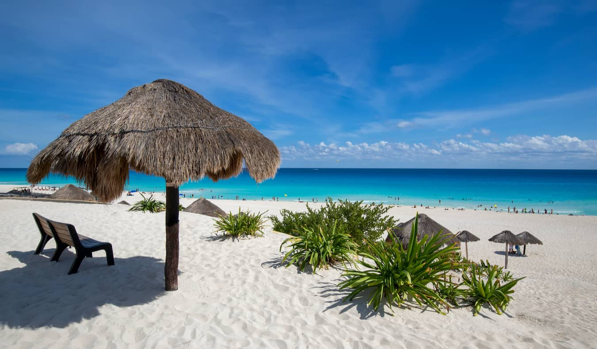

Florencia
Fechas disponibles: 1-7 Abril
Cuna del Renacimiento. Admira la Catedral de Santa María del Fiore, la Galería Uffizi y pasea por el Ponte Vecchio mientras disfrutas de la arquitectura y el arte italiano.

Fechas disponibles: 1-7 Abril
Cuna del Renacimiento. Admira la Catedral de Santa María del Fiore, la Galería Uffizi y pasea por el Ponte Vecchio mientras disfrutas de la arquitectura y el arte italiano.

Fechas disponibles: 5-12 Septiembre
Cuna de la civilización occidental. Visita la Acrópolis, el Partenón y recorre el barrio de Plaka mientras disfrutas de la historia y la gastronomía griega.

Fechas disponibles: 15-22 Abril
Una de las ciudades más pintorescas de Suiza. Recorre el Puente de la Capilla, el lago de Lucerna y disfruta de vistas a los Alpes.
Fechas disponibles: 1-7 Abril
La ciudad que nunca duerme. Visita Times Square, Central Park, la Estatua de la Libertad y disfruta de musicales en Broadway.

Fechas disponibles: 15-22 Abril
Destino caribeño con playas de arena blanca y aguas turquesas. Perfecto para relajarse, practicar snorkel y visitar ruinas mayas cercanas como Tulum o Chichén Itzá.

Fechas disponibles: 15-22 Abril
Famosa por sus playas de Copacabana e Ipanema y el icónico Cristo Redentor. Disfruta del ambiente festivo, el carnaval y las vistas desde el Pan de Azúcar.